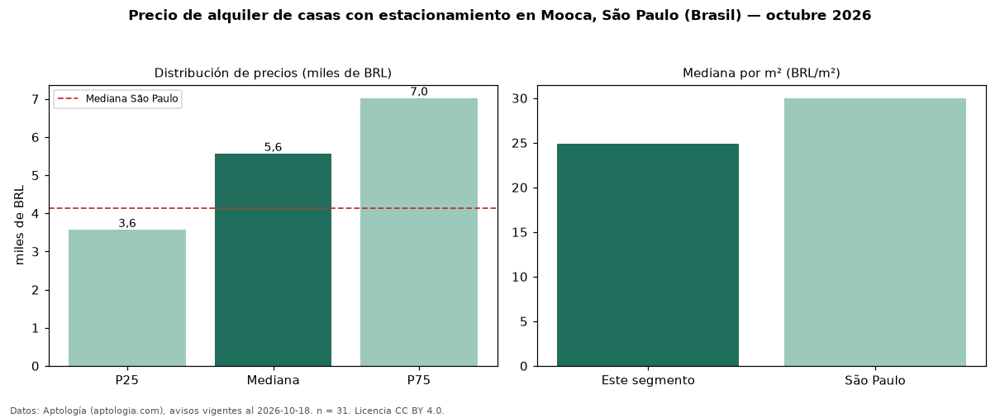

Precio de alquiler de casas con estacionamiento en Mooca, São Paulo (Brasil) — octubre 2026
BRL 5.565 al mes es el canon mediano de casas con estacionamiento en alquiler en Mooca, São Paulo (Brasil) (n = 31 avisos). Eso es 19 % más que la mediana de todas las casas en alquiler de Mooca (BRL 4.695, n = 40); este segmento reúne el 78 % de esos avisos. Por metro cuadrado, la mediana es BRL 24,88/m² al mes (n = 31), 0 % por encima del conjunto de referencia (BRL 24,79/m²). El área mediana anunciada es 219 m². El segmento con más oferta es el de 3 o más habitaciones (27 avisos, mediana BRL 5.720). La mitad central de los avisos va de BRL 3.570 a BRL 7.022 (razón 2,0), una dispersión moderada. La mediana de todas las casas en alquiler de São Paulo es BRL 4.140 (+34 % de diferencia). Datos: Aptología (aptologia.com), CC BY 4.0 — https://www.aptologia.com/br/aluguel/sao-paulo/mooca. Archivos: PDF, CSV con las cifras y gráfica PNG.

| Avisos únicos | 31 |
|---|---|
| Percentil 25 | COP 3.569 |
| Mediana | COP 5.565 |
| Percentil 75 | COP 7.022 |
| Mediana por m² | COP 24 |
Fuente: avisos vigentes de portales inmobiliarios recopilados por Aptología, deduplicados (mínimo 30 avisos únicos por celda). Precios pedidos, no cerrados. Fecha: 2026-10-18.